S-Tec short estimate
에스텍 단기인력 견적시스템
사용자 매뉴얼
User Manual
에스텍 단기인력 견적시스템 — 사용 방법 (v1.5.2)
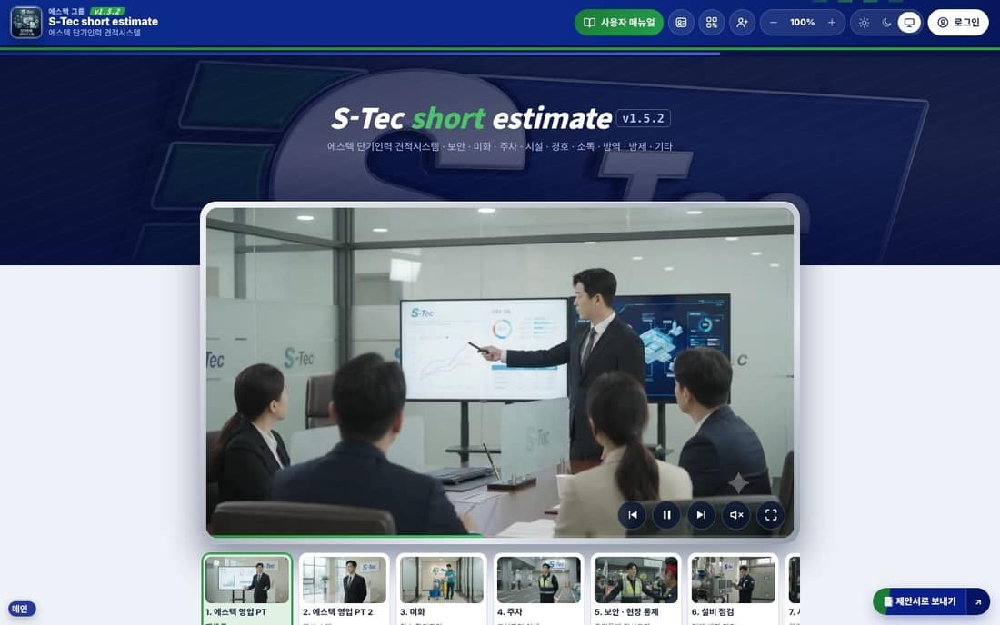
구분 | 내용 |
|---|---|
대상 | 프로그램을 쓰는 모든 사용자 |
프로그램 버전 | v1.5.2 |
주소 | https://sadness500-boop.github.io/s-ttec-short-estimate/ |
차례
01 최신 버전 안내 (v1.5.2)
02 12개 프로그램 공통 화면
03 프로그램 개요
04 설치와 실행
05 처음 시작하기 — 견적 담당 지정
06 화면 구성
07 견적 작성
08 견적서 출력
09 요율 설정
10 공유 · 보관함 · 화면 테마
11 에스텍 통합 로그인 · 계정 · 여러 기기 동기화
12 공통 기준정보 · 「📂 자료」
13 자주 묻는 질문
1. 최신 버전 안내 (v1.5.2)
요점 이 매뉴얼은 v1.5.2 기준 · 이전 매뉴얼 v1.5.2 이후 바뀐 점 · 최신 화면 사진
이 매뉴얼은 에스텍 단기인력 견적시스템 v1.5.2 기준입니다. 이전 매뉴얼(v1.5.2) 이후 바뀐 점을 아래에 모았고, 각 장의 설명은 이전 매뉴얼 내용을 바탕으로 합니다. 2026년 11월 22일에 12개 프로그램의 상단 · 하단 · 글씨체 · 화면 배치를 통일했습니다(「12개 프로그램 공통 화면」 장).
그림 1. v1.5.2 메인 화면
바뀐 점 |
|---|
함께 쓰는 사이트 → 메인 프로그램 카드, 하단 좌·우 배치 · 제작자/날짜 간격, 근태관리 상단 선, 결과 칸 위로 |
에스텍 그룹 기준 · 사업장 목록 기준정보 연동, 글씨체 · 기본 글씨 크기 통일, 하단 서명 반짝임 제거, 빈 공간 없는 메인 화면 배치 |
상단 「The Best Choice」 삭제 · 프로그램명 버튼 높이로 축소, 하단 서명 · 날짜 왼쪽과 같은 글씨체, 하단 불필요 문구 삭제 |
상단·하단 보완 — 모바일 줄바꿈·서명 크기, 원래 Things to enjoy 숨김(함께 쓰는 사이트로 통일), 하단 배경 충돌 수정, 아이콘 늦게 채워지는 프로그램 대응 |
제작자 관리매뉴얼 공개 파일 삭제 — 제작자 전용 비공개 보관함으로 이전 |
상단·하단·함께 쓰는 사이트·프로그램별 사용자 매뉴얼 통일 |
제작자 관리매뉴얼 — 제작자만: 공개 파일·배포본에서 빼고 서버 비공개 보관함(owner-docs)에서 제작자 계정에게만 보기·내려받기 (통합관리시스템 공통) |
공통 상단 버튼(통합관리시스템과 같은 모양·새 아이콘): 사용자 매뉴얼 · 내 정보 · QR · 친구추천 · 화면 크기 · 테마 · 제작자 관리 콘솔(제작자만)/조직관리자 관리콘솔 · 계정 |
회사·조직별 공개 잠금 화면 (소속 조직에 공개되지 않은 프로그램 안내) |
제안서 제작시스템 연동 — 「📑 제안서로 보내기」 추가 |
2. 12개 프로그램 공통 화면
요점 상단: 아이콘 · 에스텍 그룹 · 버전 · 프로그램명 · 기능 버튼 · 하단: 에스텍 그룹 · 프로그램명 | 제작자 · 오늘 날짜 · 같은 아이디로 12개 프로그램 · 📂 자료 — 에스텍 그룹 공통 기준정보
에스텍 운영 및 영업 통합관리 시스템(메인)과 11개 프로그램은 상단 · 하단 모양과 버튼이 모두 같습니다. 한 프로그램에서 익힌 사용법을 다른 프로그램에서도 그대로 쓸 수 있습니다.
상단
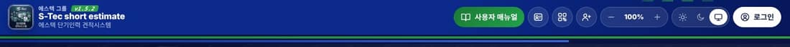
그림 2. 상단 — 왼쪽 아이콘 · 에스텍 그룹 · 버전 · 영문 · 한글 프로그램명, 오른쪽 기능 버튼
왼쪽 아이콘을 누르면 프로그램 첫 화면으로 돌아갑니다. 「에스텍 그룹」 옆의 초록 표시는 지금 쓰고 있는 프로그램 버전입니다.
버튼 | 하는 일 |
|---|---|
📘 사용자 매뉴얼 | 이 프로그램 사용자 매뉴얼을 화면에서 보고 Word · PPT · PDF로 내려받기 |
🪪 내 정보 | 내 아이디 · 역할 · 소속 조직 · 관리범위 · 사용기한 확인, 소속 · 연락처 고치기 |
다운로드 QR | 휴대폰 설치용 QR과 앱 내려받기 |
친구 추천 | 프로그램 주소를 동료에게 보내기 |
− 100% + | 화면 크기(글씨 크기) 조절 |
☀ / ☾ / ▣ | 주간 · 야간 · 시스템 화면 |
🛡 관리 콘솔 | 제작자에게는 「제작자 관리 콘솔」, 조직관리자에게는 「조직관리자 관리콘솔」로 보입니다(일반 사용자에게는 안 보임) |
계정(이름) | 로그인 · 로그아웃 · 비밀번호 변경 |
하단
그림 3. 하단 — 왼쪽 「© 에스텍 그룹 · 프로그램명」, 오른쪽 「제작자 | 오늘 날짜」
하단 왼쪽에는 에스텍 그룹과 프로그램 이름이, 오른쪽에는 제작자(Designed & Developed by Rat Rae Choi)와 오늘 날짜가 나옵니다.
사용자 매뉴얼 보기 · 내려받기
그림 4. 📘 사용자 매뉴얼 — 화면에서 바로 보기, 장 목록 · 찾기, Word · PPT · PDF 내려받기
- 상단 「📘 사용자 매뉴얼」을 누르면 이 프로그램 매뉴얼이 화면에 열립니다(메인 프로그램은 통합 매뉴얼).
- 왼쪽 목록에서 장을 고르거나 찾기 칸에 낱말을 적어 찾습니다.
- 위쪽 Word · PPT · PDF 버튼으로 파일을 내려받습니다.
📂 자료 — 에스텍 그룹 공통 기준정보
화면 왼쪽 아래 「📂 자료」에서 회사(계열사) · 조직(본부 · 지사 · 지점) · 사업장을 엑셀로 넣습니다. 한 번 넣으면 12개 프로그램이 함께 씁니다. 사업장 목록은 에스텍 그룹 기준이라 다른 계열사 사업장도 함께 보입니다.
- 「📂 자료」 → 「입력 양식(엑셀) 받기」 또는 「현재 자료 받기」
- 엑셀의 「회사 · 조직 · 사업장」 시트에 한 줄에 하나씩 적기(머리글에 * 가 있는 칸은 꼭)
- 「엑셀 불러오기」 → 파일 고르기 → 미리보기 확인 → 「적용」
도움말 저장은 제작자 · 관리자만 할 수 있습니다. 실제 회사 · 지사 이름(예: 에스텍베스트 동부지사)은 서류에 그대로 쓰입니다. |
메인 프로그램과 함께 쓰는 사이트
메인 프로그램 첫 화면에는 12개 프로그램과 함께 「오늘의 뽑기판 · 팔도 제철맛길 · 팔도 축제길」 카드가 있습니다. 카드를 누르면 다시 로그인하지 않고 바로 열립니다.
3. 프로그램 개요
요점 1-1. 지원 업종과 비용 계산 기준 · 1-2. 기본 산출 공식 · S-Tec short estimate는 행사·공사·일시 지원 등 단기 인력 용역의 · [그림 1] 메인 화면의 기본 산출 공식
S-Tec short estimate는 행사·공사·일시 지원 등 단기 인력 용역의 견적 을 빠르게 산출하는 에스텍 사내 프로그램입니다. 업종과 근무시간, 시급, 인원만 입력하면 법정 가산수당, 4대보험(사업주 부담), 관리손익, 장비·장구 대여비까지 자동으로 계산하고 고객사 제출용 견적서를 만듭니다.
1-1. 지원 업종과 비용 계산 기준
구분 | 내용 |
|---|---|
업종 (9종) | 보안 · 미화 · 주차 · 시설 · 경호 · 소독 · 방역 · 방제 · 기타 |
비용 계산 기준 (3종) | 감시단속직 · 일반직 · 기타 |
사용 형태 | PC 웹(HTML 파일 또는 사이트 주소), 안드로이드 앱(APK) |
로그인 | 에스텍 통합 로그인 — 하나의 아이디로 메인 프로그램과 8개 프로그램 사용 |
데이터 저장 | 견적·설정·보관함은 서버에 저장되어 같은 아이디의 모든 기기에 자동 동기화 |
1-2. 기본 산출 공식
그림 5. 화면
[그림 1] 메인 화면의 기본 산출 공식
단계 | 계산 |
|---|---|
① 인건비 | (근무시간 × 시급) + 각종수당(경호·미화·위험·주차·시설·교통비·식대) + 법정가산수당 |
② 4대보험 | ① × (1 + 4대보험 사업주 부담률) — 기본값: 에스텍시스템 요율 11.4874% |
③ 관리손익 | ② × (1 + 관리손익률) — 5% 이상만 허용, 5% 미만 입력 시 5%로 계산 |
④ 항목 금액 | ③ 1인·1일 단가 × 투입인원 × 근무일수 |
⑤ 장비·장구 | 1일 단가 × 수량 × 근무일수 (선택 시 관리손익 적용) |
⑥ 합계 | 공급가액(④+⑤, 절사 단위 적용) + 부가가치세 10% = 총 견적금액 |
4. 설치와 실행
요점 2-1. PC (웹 버전) · 2-2. 안드로이드 앱 (APK)
2-1. PC (웹 버전)
- 배포받은 S-Tec_short_estimate_v1.5.2.html 파일을 더블클릭해 크롬(또는 엣지)으로 엽니다.
- 또는 사이트 주소 https://sadness500-boop.github.io/S-Ttec-short-estimate/ 에 접속합니다.
- 자주 쓰려면 Ctrl + D 로 북마크하거나, 크롬 메뉴 ⋮ › 전송, 저장, 공유 › 페이지를 앱으로 설치를 선택합니다.
도움말 참고 HTML 한 파일 안에 영상·로고·Excel·QR 기능이 모두 들어 있습니다. 다만 통합 로그인 확인에 인터넷이 필요하며, 인터넷이 끊겨도 마지막 확인 후 24시간까지는 그대로 쓸 수 있습니다. |
2-2. 안드로이드 앱 (APK)
- 상단 다운로드 QR 카드 › 안드로이드 앱(APK) 탭의 QR을 휴대폰 카메라로 찍거나, APK 파일을 휴대폰으로 받습니다.
- 내려받은 파일을 누르고 "출처를 알 수 없는 앱 설치"를 허용합니다.
- Play 프로텍트 경고가 뜨면 "무시하고 설치"를 누릅니다.
- 새 버전은 기존 앱을 지우지 않고 그대로 덮어 설치합니다(입력한 견적이 유지됩니다).
도움말 알림 이 개별 앱은 2026-12-18까지 함께 씁니다. 이후에는 통합 앱 「S-Tec Operations」 하나로 8개 프로그램을 씁니다(9-4 참고). |
5. 처음 시작하기 — 견적 담당 지정
요점 먼저 통합 로그인(9장)을 하고 나면, 견적 담당이 지정되지 않은 경우 프로그램이 · [그림 2] 잠금 화면 — 견적 담당 지정
먼저 통합 로그인(9장)을 하고 나면, 견적 담당이 지정되지 않은 경우 프로그램이 잠겨 있습니다. 처음 실행하면 아래 화면에서 담당자를 등록합니다.
그림 6. 화면
[그림 2] 잠금 화면 — 견적 담당 지정
- 성명(필수), 직책, 소속, 연락처를 입력합니다. 사진 선택으로 얼굴 사진을 넣을 수 있습니다.
- 견적 담당 지정하고 시작 을 누르면 견적 작성 화면이 열립니다.
- 담당 정보는 상단 "견적 담당" 카드에 표시되며, 카드를 눌러 언제든 수정하거나 해제할 수 있습니다(해제하면 다시 잠김).
6. 화면 구성
요점 4-1. 상단 바 · 4-2. 메인 영상 (11편 순서 재생) · 4-3. 작업 탭과 하단 브랜드
4-1. 상단 바
그림 7. 화면
[그림 3] 상단 바
요소 | 기능 |
|---|---|
앱 아이콘 | 누르면 메인 화면(맨 위)으로 돌아갑니다. |
견적 담당 | 담당자 사진·이름·소속 표시, 눌러서 지정·수정·해제 |
다운로드 QR | 웹 버전 주소 / 안드로이드 앱(APK) 주소 QR을 크게 보기, 주소 복사 |
친구 추천 | 사이트 주소 QR과 추천 메시지(카카오톡·문자용) 복사 |
내 계정 | 이름·역할·동기화 시각 표시, 눌러서 내 계정 메뉴 열기 (9장 참고) |
☀ 주간 · ☾ 야간 · ▣ 시스템 | 화면 밝기 테마 선택 (시스템 = 휴대폰·PC 설정을 따름) |
메인 · 📂 자료 (왼쪽 아래) | 메인 프로그램으로 이동 · 공통 기준정보 자료 (9-4, 10장) |
4-2. 메인 영상 (11편 순서 재생)
그림 8. 화면
[그림 4] 메인 영상과 영상 목록
아래 순서로 11편이 차례로 재생되고, 마지막이 끝나면 처음으로 돌아갑니다. 영상이 바뀔 때 모자이크 · 디졸브 전환 효과가 번갈아 나옵니다.
순서 | 영상 |
|---|---|
1 ~ 4 | 에스텍 영업 PT · 에스텍 영업 PT 2 · 미화 · 주차 |
5 ~ 8 | 보안 · 현장 통제 · 설비 점검 · 시설·특수장비 · 시설관리 |
9 ~ 11 | 행사 경호 · 집회·시위 경호 · 소독·방역·방제 |
- ⏮ 이전 · ⏯ 재생/일시정지 · ⏭ 다음 · 🔈 소리 켜기 · ⛶ 전체화면
- 영상 아래 목록의 썸네일을 누르면 해당 영상으로 바로 이동합니다.
4-3. 작업 탭과 하단 브랜드
그림 9. 화면
[그림 5] 메인 중앙 작업 탭
메인 화면 가운데의 견적 작성 · 견적서 · 요율 설정 탭으로 작업을 전환합니다. 화면을 내려도 탭이 위에 붙어 따라오며, 오른쪽의 새 견적 · 보관함 버튼으로 새로 시작하거나 저장한 견적을 엽니다. 화면 맨 아래에는 S-Tec 브랜드 이미지 4종이 있으며 누르면 크게 볼 수 있습니다.
그림 10. 화면
[그림 6] 화면 하단 S-Tec 브랜드
7. 견적 작성
요점 5-1. 견적 기본정보 · 5-2. 근무 항목 입력 · 5-3. 근무 날짜 달력과 휴일 자동 계산 · 5-4. 장비 · 장구 대여비
5-1. 견적 기본정보
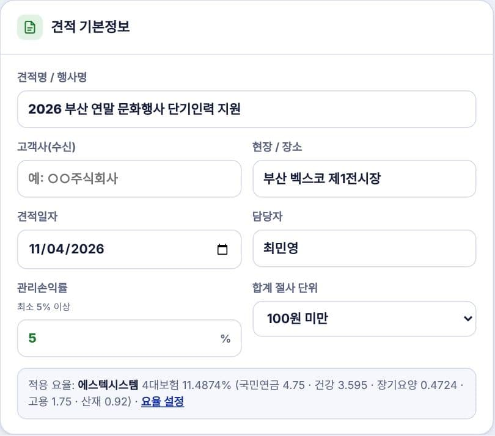
그림 11. 화면
[그림 7] 견적 기본정보
항목 | 설명 |
|---|---|
견적명 / 행사명 | 견적서 제목으로 쓰입니다. |
고객사(수신) | 견적서의 "수신 ○○ 귀중"에 표시 |
현장 / 장소, 견적일자, 담당자 | 견적서 표기 항목 (담당자는 견적 담당으로 자동 입력) |
관리손익률 | 최소 5% — 5% 미만을 입력하면 경고 후 5%로 계산 |
합계 절사 단위 | 공급가액의 10원·100원·1,000원·10,000원 미만 절사 |
5-2. 근무 항목 입력
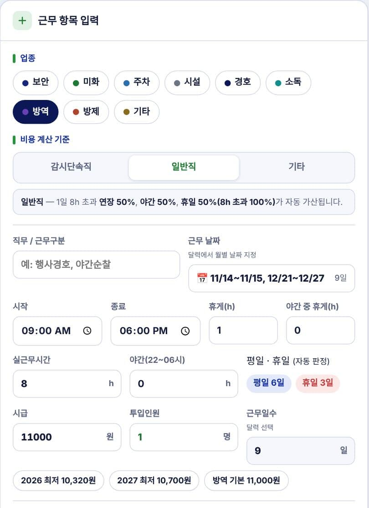
그림 12. 화면
[그림 8] 업종 · 비용 계산 기준 · 근무 날짜 · 근무시간
- 업종 을 고릅니다. 업종별 기본 시급·수당·계산 기준이 자동으로 채워집니다.
- 비용 계산 기준 을 확인합니다. 일반직은 연장(1일 8h 초과) 50%·야간 50%·휴일 50%(8h 초과 100%), 감시단속직은 야간 50%만, 기타는 가산율을 직접 입력합니다.
- 직무를 입력하고 근무 날짜 버튼을 눌러 달력에서 일하는 날짜를 고릅니다(5-3 참고). 근무일수와 평일·휴일 일수가 자동으로 채워집니다.
- 시작·종료 시각과 휴게시간 을 넣으면 실근무시간과 야간(22~06시) 시간이 자동 계산됩니다.
- 시급 · 투입인원 을 입력합니다. 2026·2027 최저임금 버튼으로 시급을 바로 넣을 수 있고, 첫 근무일 연도의 최저임금보다 낮으면 경고가 뜹니다.
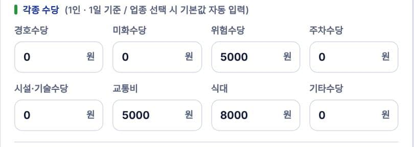
그림 13. 화면
[그림 9] 각종 수당 (1인·1일)
- 경호·미화·위험·주차·시설기술 수당, 교통비, 식대, 기타수당을 1인·1일 기준으로 확인·수정합니다.
5-3. 근무 날짜 달력과 휴일 자동 계산
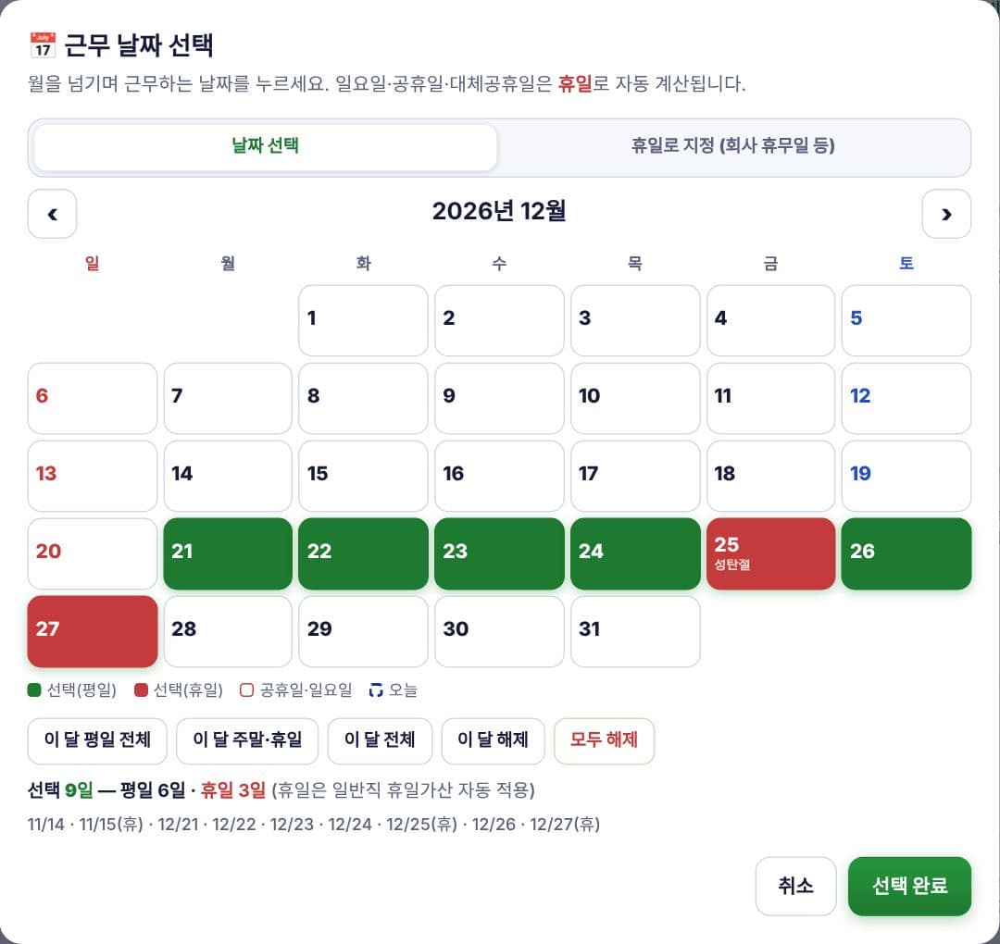
그림 14. 화면
[그림 10] 근무 날짜 선택 달력
- 근무 날짜 버튼(또는 근무일수 칸)을 누르면 달력이 열립니다. ‹ › 로 월을 넘기며 근무하는 날짜를 하나씩 누릅니다. 여러 달에 걸친 날짜도 함께 고를 수 있습니다.
- 일요일 · 관공서 공휴일 · 대체공휴일(2026~2027년 등록)은 빨간색으로 표시되고, 선택하면 휴일 로 자동 계산됩니다.
- 회사 휴무일처럼 따로 휴일로 볼 날은 위쪽 휴일로 지정 모드에서 날짜를 누르면 "휴" 표시와 함께 휴일로 계산됩니다.
- "이 달 평일 전체 · 이 달 주말·휴일 · 이 달 전체 · 이 달 해제 · 모두 해제" 버튼으로 한 번에 고를 수 있습니다.
- 선택 완료 를 누르면 근무일수와 "평일 n일 · 휴일 n일"이 표시됩니다.
계산 기준 | 평일 근무 | 휴일 근무 (자동) |
|---|---|---|
일반직 | 1일 8h 초과분 연장 50%, 야간 50% | 8h 이내 50% · 8h 초과 100%, 야간 50% |
감시단속직 | 야간 50% | 야간 50% (휴일·연장 가산 제외) |
기타 | 직접 입력한 가산율 | 직접 입력한 가산율 |
도움말 계산 평일 단가와 휴일 단가를 각각 계산해 "평일 단가 × 평일 일수 + 휴일 단가 × 휴일 일수"로 합산합니다. 토요일도 휴일로 보려면 요율 설정 › 법정 가산율에서 "토요일 근무도 휴일로 계산"을 체크합니다. |
5-4. 장비 · 장구 대여비
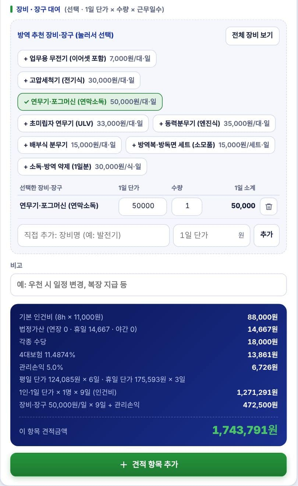
그림 15. 화면
[그림 11] 장비·장구 선택과 항목 미리보기
- 업종별 추천 장비·장구 버튼을 누르면 선택 목록에 추가됩니다. 전체 장비 보기 로 다른 업종 장비도 고를 수 있습니다.
- 선택 목록에서 1일 단가와 수량을 고칩니다. 금액 = 1일 단가 × 수량 × 근무일수.
- 목록에 없는 장비는 "직접 추가"에 장비명과 1일 단가를 넣고 추가합니다.
- 아래 파란 미리보기에서 1인·1일 단가와 이 항목 견적금액을 확인한 뒤 견적 항목 추가 를 누릅니다.
도움말 장비 예시 경호: 무전기·금속탐지기·경광봉 / 미화: 탑승식·보행식 바닥세척기, 공업용 청소기, 고압세척기 / 소독·방역·방제: 연무기(포그머신), 초미립자 연무기(ULV), 동력·배부식 분무기, 방역복 세트, 약제 / 특수장비: 지게차, 사다리차, 스카이차, 고소작업대 |
5-5. ＋ 조건 추가 — 같은 업종, 다른 조건
한 사업장 견적에서 같은 업종인데 비용 조건이 다른 경우(예: 보안 남성·여성 수당 차이, 장비 사용 여부, 날짜별 인원 차이)에는 항목을 처음부터 다시 만들지 않고 ＋ 조건 추가 로 바로 추가합니다.
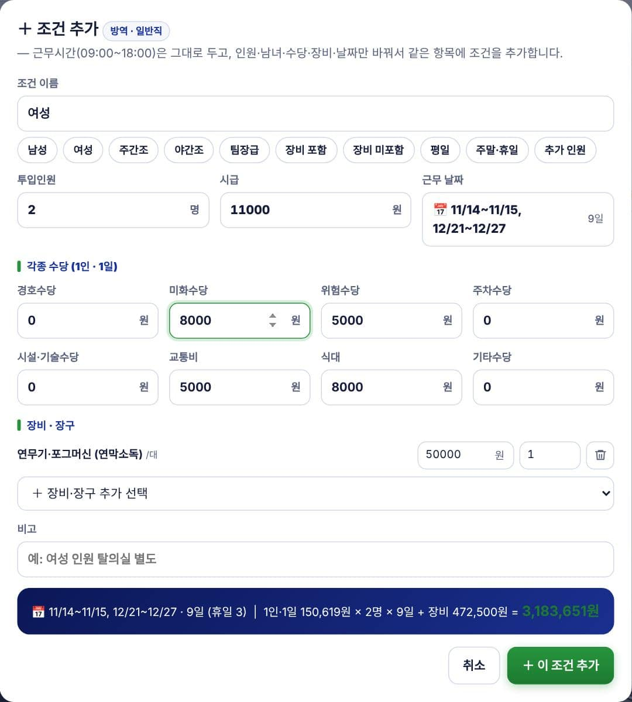
그림 16. 화면
[그림 12] 조건 추가 창
- 견적 항목 목록에서 해당 항목 아래의 ＋ 조건 추가 버튼을 누릅니다. 업종·계산 기준·근무시간은 그대로 복사됩니다.
- 조건 이름 을 정합니다. 남성 · 여성 · 주간조 · 야간조 · 팀장급 · 장비 포함 · 주말·휴일 등의 버튼으로 바로 넣을 수 있습니다.
- 바뀌는 것만 고칩니다: 투입인원 · 시급 · 근무 날짜 · 각종 수당 · 장비·장구 . 아래 파란 칸에 이 조건의 금액이 바로 계산됩니다.
- ＋ 이 조건 추가 를 누르면 같은 항목 안에 조건이 쌓이고, 항목 머리에 조건별 합계가 표시됩니다.
그림 17. 화면
[그림 13] 조건이 2개인 견적 항목 (보안 남성 · 여성)
- 첫 번째 조건(기본 조건)은 ✎ 버튼으로 전체 수정(근무시간 포함), 추가한 조건은 ✎ 버튼으로 빠른 수정 창이 열립니다.
- 날짜별 인원이 다르면 같은 항목에 날짜만 다르게 고른 조건을 추가합니다(예: 평일 5명 / 주말·휴일 8명).
- 견적서와 Excel에는 직무 옆에 [조건 이름]이 함께 표시됩니다.
5-6. 견적 항목 관리와 합계
그림 18. 화면
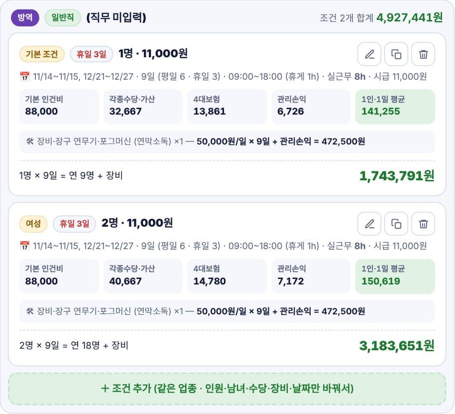
그림 19. 화면
[그림 14] 견적 항목 목록 (조건 2개)
- 각 항목 오른쪽 버튼: ✎ 수정 · ⧉ 복제 · 🗑 삭제. 수정 중인 항목은 초록 테두리로 표시됩니다.
- 같은 근무를 다른 날짜·인원으로 반복할 때는 복제 후 수정하면 빠릅니다.
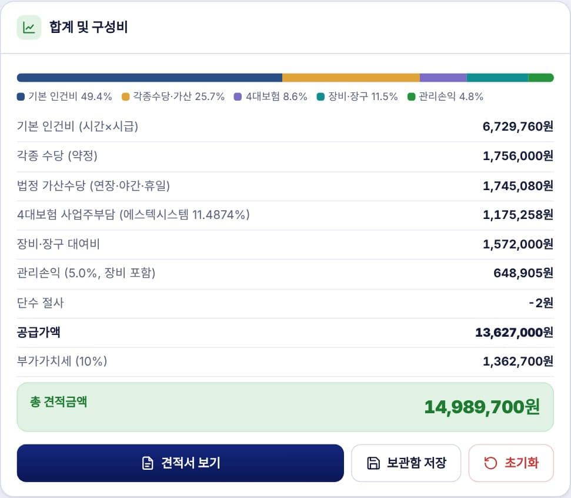
그림 20. 화면
[그림 15] 합계 및 구성비
합계 카드는 기본 인건비, 약정 수당, 법정 가산수당, 4대보험, 장비·장구 대여비, 관리손익, 절사, 공급가액, 부가세, 총 견적금액을 차례로 보여줍니다. 위쪽 막대는 금액 구성비입니다.
8. 견적서 출력
요점 [그림 16] 견적서 도구 모음 · [그림 17] 견적서 (상단) · 견적서에는 수신·견적명·현장·담당, 발신 상호 "에스텍"과 주소·연락처, 합계금액( · [그림 18] 견적서 (하단 · 산출 근거)
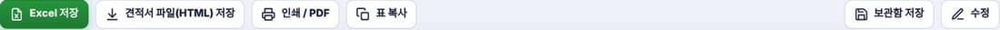
그림 21. 화면
[그림 16] 견적서 도구 모음
버튼 | 기능 |
|---|---|
Excel 저장 | 견적 내역을 .xlsx 파일로 저장 (앱에서는 저장·공유 창이 열림) |
견적서 파일(HTML) 저장 | 견적서만 담긴 HTML 파일 — 메일 첨부, 열어서 인쇄 가능 |
인쇄 / PDF | PC 인쇄 창에서 "PDF로 저장" 선택 (앱에서는 숨김) |
표 복사 | 표 내용을 복사해 Excel·한글에 붙여넣기 |
보관함 저장 / 수정 | 현재 견적 보관, 견적 작성 화면으로 돌아가기 |
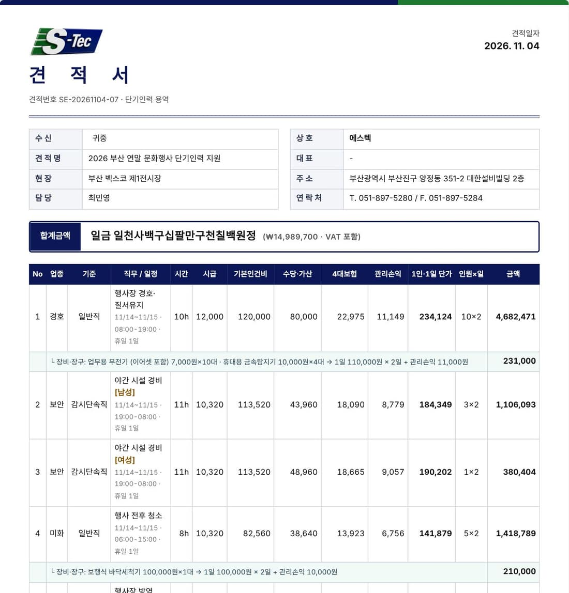
그림 22. 화면
[그림 17] 견적서 (상단)
견적서에는 수신·견적명·현장·담당, 발신 상호 "에스텍"과 주소·연락처, 합계금액(한글 금액 표기), 항목별 산출표, 장비·장구 내역, 공급가액·부가세·총합계, 산출 근거와 요율이 표시됩니다.
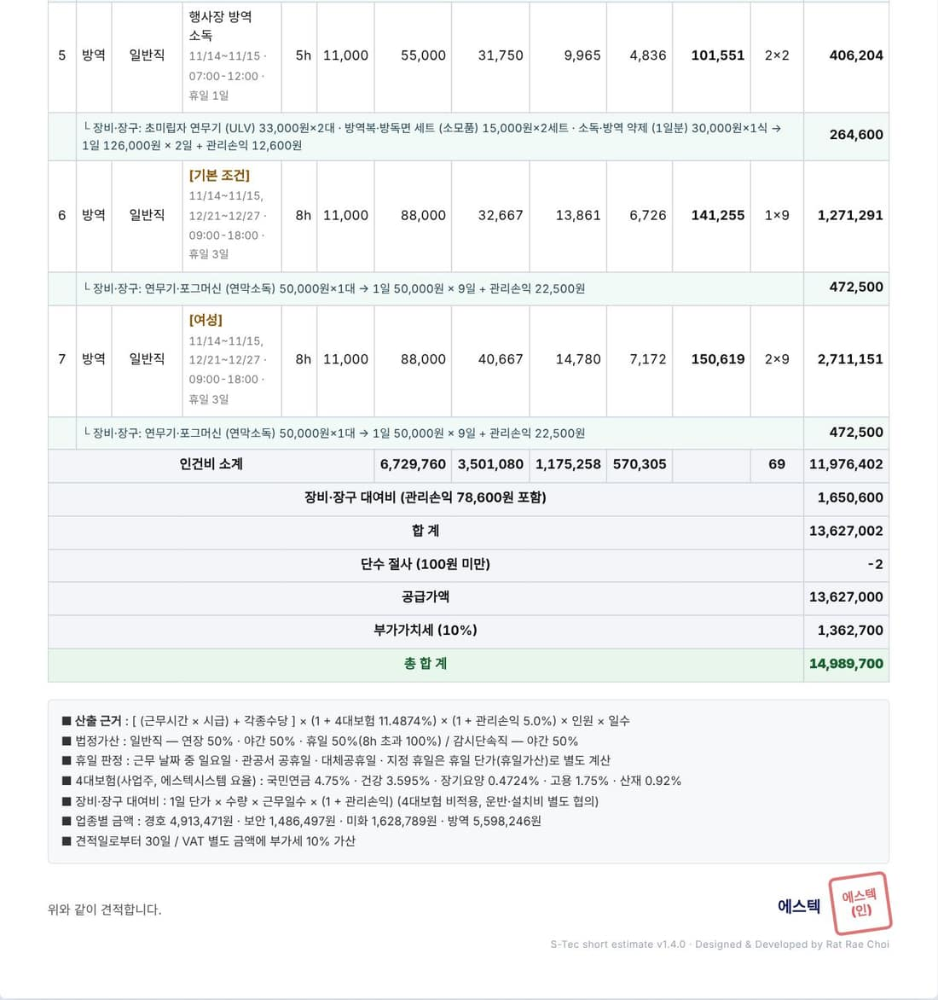
그림 23. 화면
[그림 18] 견적서 (하단 · 산출 근거)
9. 요율 설정
요점 7-1. 4대보험 사업주 부담 요율 · 7-2. 법정 가산율 · 최저임금 · 7-3. 업종별 프리셋 · 장비 단가표 · 회사 정보
7-1. 4대보험 사업주 부담 요율
그림 24. 화면
[그림 19] 4대보험 요율
보험 | 에스텍시스템 (기본) | 150인 미만 |
|---|---|---|
국민연금 | 4.75% | 4.75% |
건강보험 | 3.595% | 3.595% |
장기요양보험 | 0.4724% | 0.4724% |
고용보험 | 1.75% (실업급여 0.9 + 고용안정·직업능력개발 0.85) | 1.15% (0.9 + 0.25) |
산재보험 | 0.92% (시설관리·사업지원 0.8 + 출퇴근 0.06 + 임금채권 0.06) | 0.92% |
합계 | 11.4874% | 10.8874% |
도움말 주의 요율을 하나라도 직접 고치면 "직접 입력" 상태가 됩니다. 회사 고지서 요율과 다르면 여기서 수정하세요. 퇴직충당금(8.33%)은 계속근로 1년 이상 예정일 때만 체크합니다. |
7-2. 법정 가산율 · 최저임금
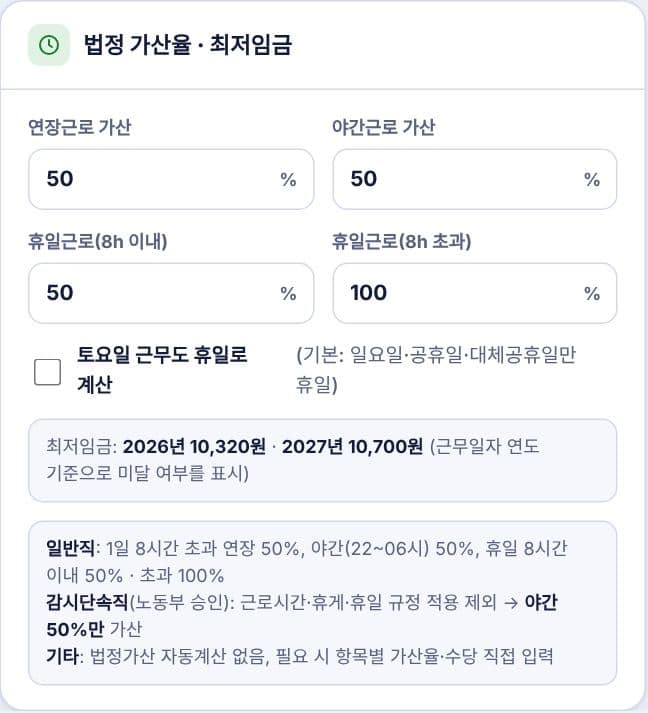
그림 25. 화면
[그림 20] 법정 가산율 · 토요일 휴일 옵션
7-3. 업종별 프리셋 · 장비 단가표 · 회사 정보
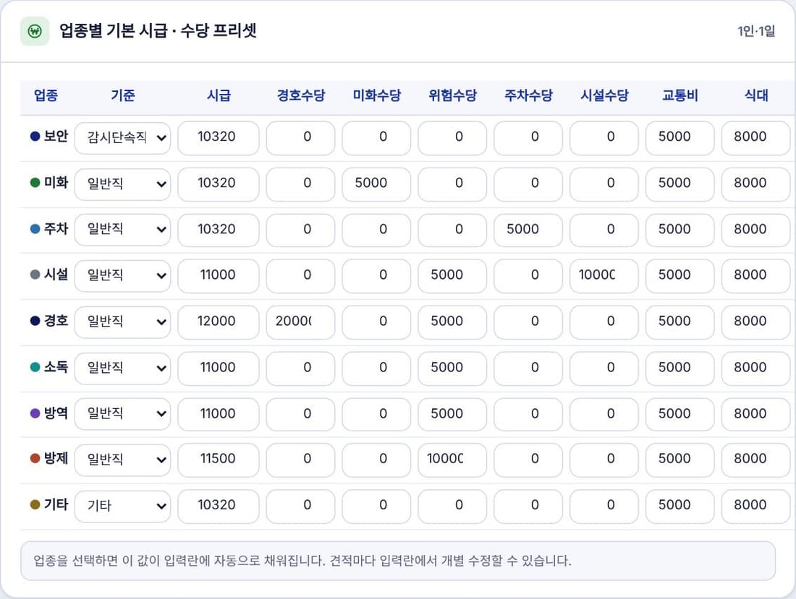
그림 26. 화면
[그림 21] 업종별 기본 시급·수당 프리셋
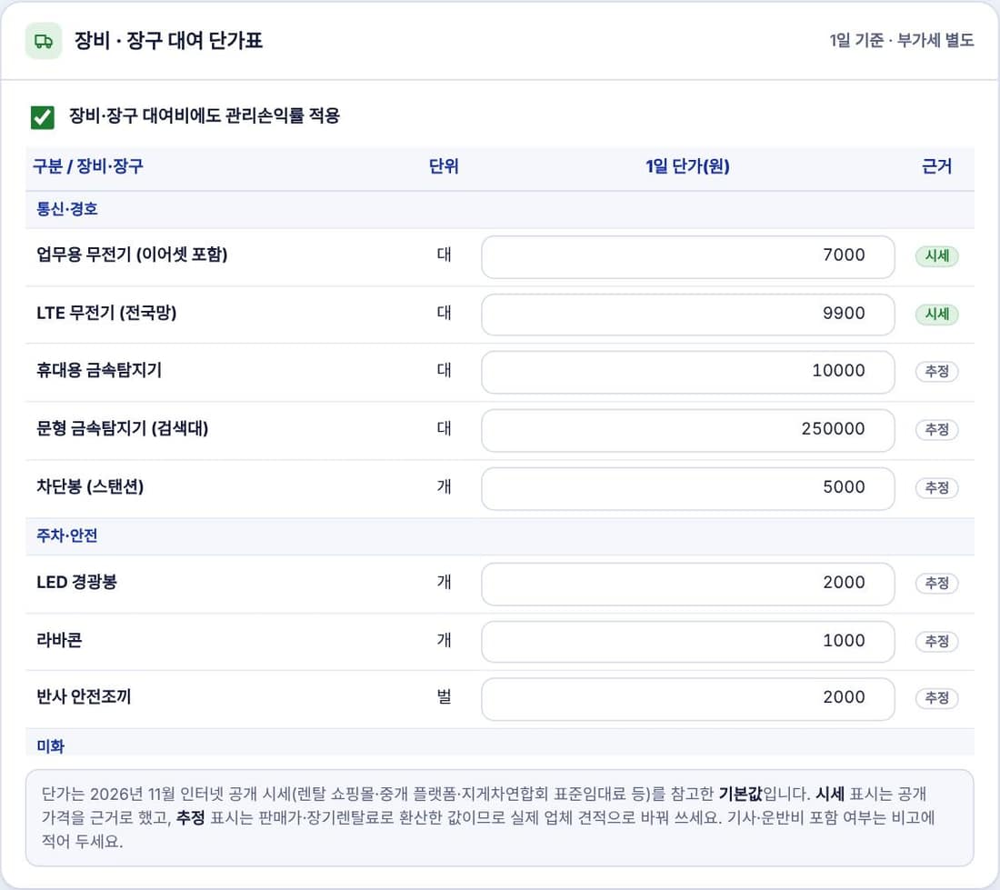
그림 27. 화면
[그림 22] 장비·장구 대여 단가표
- 업종별 기본 시급·수당·계산 기준을 바꾸면 다음 입력부터 자동으로 채워집니다.
- 장비 단가표의 "시세"는 공개 가격 근거, "추정"은 판매가·장기렌탈료 환산값입니다. 거래처 실제 단가로 고쳐 쓰세요.
- 발신 회사 정보(상호·대표·주소·연락처·유효기간)는 견적서에 그대로 표시됩니다.
- 배포 주소(웹·APK)는 다운로드 QR과 친구 추천에 쓰입니다.
10. 공유 · 보관함 · 화면 테마
요점 8-1. 다운로드 QR과 친구 추천 · 8-2. 견적 보관함 · 8-3. 야간 화면과 휴대폰 화면
8-1. 다운로드 QR과 친구 추천
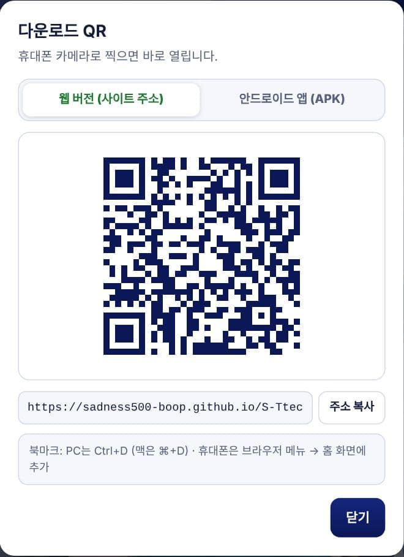
그림 28. 화면
[그림 23] 다운로드 QR
웹 버전/안드로이드 앱(APK) 탭을 바꿔 QR을 보여주거나 주소를 복사합니다. 친구 추천은 QR과 함께 카카오톡·문자로 보낼 추천 메시지를 만들어 줍니다.
8-2. 견적 보관함
그림 29. 화면
[그림 24] 견적 보관함
보관함 저장을 누르면 견적명·날짜 기준으로 최대 50건까지 이 기기에 저장됩니다. 열기로 불러와 수정·재발행하고, 휴지통으로 삭제합니다.
8-3. 야간 화면과 휴대폰 화면
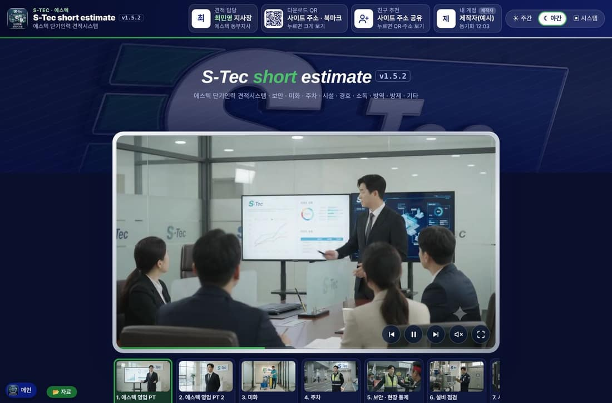
그림 30. 화면
[그림 25] 야간(다크) 테마
11. 에스텍 통합 로그인 · 계정 · 여러 기기 동기화
요점 9-1. 로그인 · 가입 신청 · 9-2. 들어가지 못할 때 나오는 화면 · 9-3. 상단 계정 카드 · 내 계정 메뉴 · 9-4. 화면 왼쪽 아래 「메인」 · 「📂 자료」 버튼
S-Tec short estimate는 에스텍 통합 로그인 을 씁니다. 메인 프로그램 「S-Tec Operations and Sales Integrated Management System」과 에스텍 8개 프로그램이 같은 아이디 하나 로 열리고, 한 곳에서 로그인하면 다른 프로그램도 다시 로그인하지 않고 바로 열립니다.
8개 프로그램 | |
|---|---|
① 근태관리 · ② 사업장 현황 지도 · ③ 용역인력 견적 · ④ 업무량 기반 산정 | ⑤ 단기인력 견적(이 프로그램) · ⑥ 고객 불만처리 · ⑦ 업무표준화·매뉴얼 · ⑧ 법률 대응 시스템 |
역할 | 할 수 있는 일 |
|---|---|
제작자 (owner) | 모든 기능. 관리자 지정·해제, 계정 삭제, 앱 전체 설정. 누구도 제작자 계정을 막거나 바꿀 수 없음 |
관리자 (admin) | 일반 사용자 승인·차단·사용기한·임시 비밀번호·강제 로그아웃·기기 차단·프로그램별 권한 지정 |
사용자 (user) | 사용 권한을 받은 프로그램 사용, 내 정보·비밀번호 변경, 동기화 |
9-1. 로그인 · 가입 신청
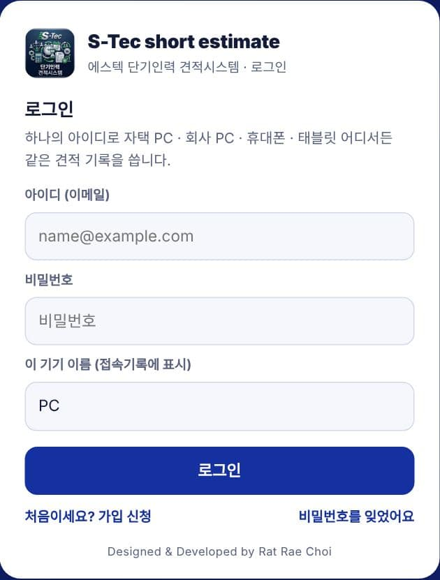
그림 31. 화면
[그림 26] 로그인 화면
- 처음 쓰는 직원은 처음이세요? 가입 신청 을 눌러 이름·소속·연락처·이메일·비밀번호를 입력합니다. 다른 에스텍 프로그램에서 이미 가입했다면 같은 아이디로 로그인하면 됩니다.
- 제작자(관리자)가 가입 승인 과 이 프로그램의 사용 권한 을 주면 바로 사용할 수 있습니다.
- 로그인할 때 이 기기 이름 (예: 자택 PC, 회사 PC, 내 휴대폰)을 적어 두면 접속기록에서 구분하기 쉽습니다.
- 비밀번호를 잊으면 비밀번호를 잊었어요 → 메일 링크로 새 비밀번호를 정하거나, 관리자에게 임시 비밀번호를 요청합니다.
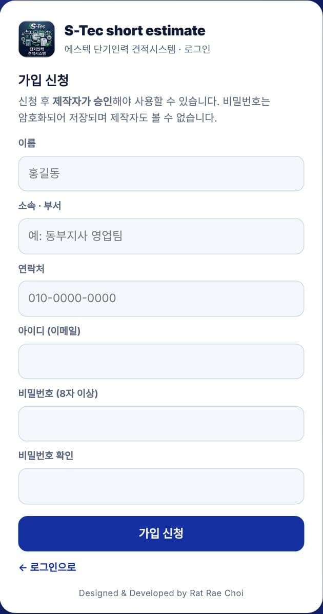
그림 32. 화면
[그림 27] 가입 신청
도움말 보안 비밀번호는 서버에 암호화되어 저장되므로 제작자·관리자도 볼 수 없습니다. 임시 비밀번호로 로그인하면 본인만 아는 새 비밀번호로 바꿔야 계속 쓸 수 있습니다. |
9-2. 들어가지 못할 때 나오는 화면
로그인은 되었지만 사용할 수 없는 경우에는 이유를 알려주는 화면이 나옵니다. 제작자(관리자)가 처리하면 다시 확인 을 누르세요.
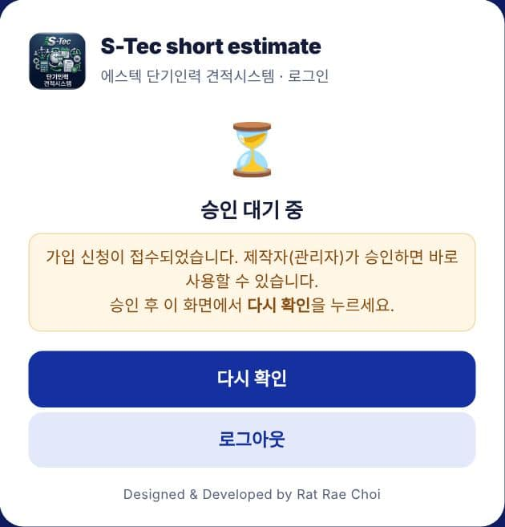
그림 33. 화면
[그림 28] 가입 승인 대기
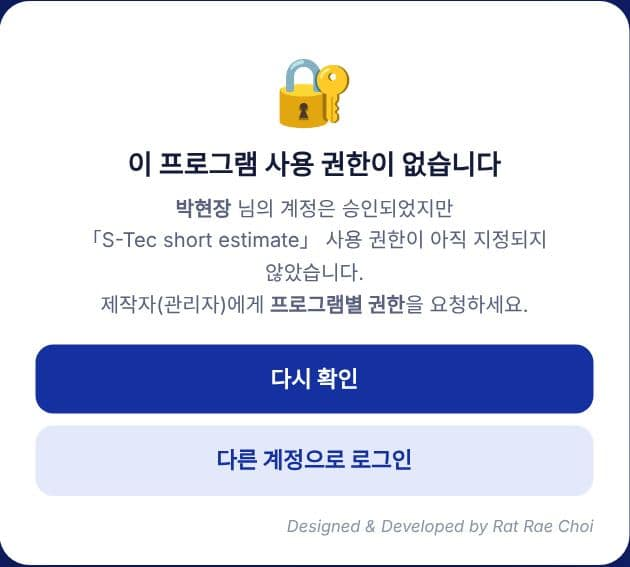
그림 34. 화면
[그림 29] 이 프로그램 사용 권한 없음
그림 35. 화면
[그림 30] 새 기기 승인 대기
화면 | 이유와 할 일 |
|---|---|
⏳ 승인 대기 중 | 가입 신청 후 제작자·관리자 승인 전 |
🔐 이 프로그램 사용 권한이 없습니다 | 계정은 승인됐지만 「단기인력 견적」 권한이 아직 없음 → 프로그램별 권한 요청 |
📅 이 프로그램 사용기한이 지났습니다 | 이 프로그램만의 사용기한이 끝남 → 연장 요청 |
📲 새 기기 승인 대기 | 처음 쓰는 기기 → 관리 콘솔 「기기」에서 승인되면 사용 (제작자가 이 기능을 켠 경우) |
⛔ 사용이 중지된 계정 · 📅 사용기한 만료 | 계정 전체가 차단되었거나 계정 기한이 끝남 |
📵 이 기기는 사용 제한 | 이 기기만 차단됨 → 다른 기기 사용 또는 문의 |
🛠️ 프로그램 점검 중 · 📶 인터넷 연결 필요 | 앱 전체 잠금 중이거나, 로그인 확인을 위해 인터넷이 필요함 |
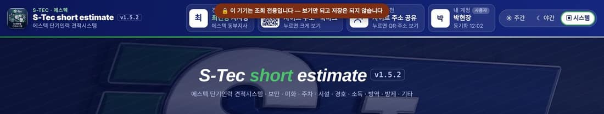
그림 36. 화면
[그림 31] 조회 전용 기기 안내
🔒 조회 전용 기기: 제작자가 어떤 기기를 「조회 전용」으로 정하면 화면 위에 안내가 나오고, 그 기기에서는 견적을 볼 수만 있고 저장·삭제 버튼은 눌리지 않습니다.
9-3. 상단 계정 카드 · 내 계정 메뉴
그림 37. 화면
[그림 32] 상단 계정 카드
상단 바의 내 계정 카드에 이름·역할과 마지막 동기화 시각이 나옵니다. 누르면 내 계정 메뉴가 열립니다.
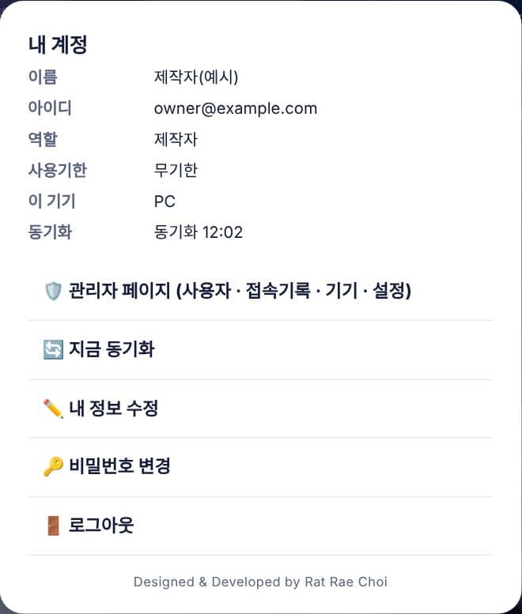
그림 38. 화면
[그림 33] 내 계정 메뉴
메뉴 | 기능 |
|---|---|
🛡️ 관리자 페이지 | 제작자·관리자에게만 표시 (제작자관리 사용매뉴얼 참고) |
🔄 지금 동기화 | 서버의 최신 기록을 받아오고 이 기기 기록을 올림 |
✏️ 내 정보 수정 | 이름·소속·연락처·이 기기 이름 변경 |
🔑 비밀번호 변경 | 새 비밀번호로 변경 |
🚪 로그아웃 | 이 기기에서 로그아웃 (통합 로그인이므로 다른 에스텍 프로그램도 함께 로그아웃) |
자동 동기화 대상: 요율 설정 · 작성 중인 견적 · 견적 보관함 · 화면 테마 · 견적 담당. 바꾸면 약 1.5초 뒤 서버에 올라가고, 다른 기기에서 열거나 로그인할 때 더 최신 기록을 자동으로 받아옵니다.
- 같은 기기에서 다른 사람이 로그인하면 이전 사람의 기록은 화면에서 지워집니다(서버에는 그대로 보관).
- 인터넷이 끊겨도 마지막 확인 후 24시간까지는 사용할 수 있고, 연결되면 다시 맞춥니다.
9-4. 화면 왼쪽 아래 「메인」 · 「📂 자료」 버튼
그림 39. 화면
[그림 34] 왼쪽 아래 버튼
버튼 | 기능 |
|---|---|
메인 | 메인 프로그램(S-Tec Operations and Sales Integrated Management System)으로 이동 — 8개 프로그램 메뉴 |
통합 앱 (개별 앱에서) | 안드로이드 개별 앱에서는 「메인」 대신 「통합 앱」으로 보이며, 누르면 통합 앱 S-Tec Operations 설치 파일을 받습니다 |
📂 자료 | 공통 기준정보(회사·조직) 입력 양식(엑셀) · 작성 안내서(PDF) · 엑셀 불러오기 (10장) |
도움말 개별 앱 → 통합 앱 안드로이드 개별 앱(S-Tec short estimate APK)은 2026-12-18까지 함께 씁니다. 이 날이 지나면 개별 앱을 열 때 「통합 앱으로 옮겨 주세요」 화면이 나오므로, 통합 앱 「S-Tec Operations」을 설치해 쓰세요. 아이디·비밀번호는 그대로입니다. PC 웹 버전은 계속 사용할 수 있습니다. |
12. 공통 기준정보 · 「📂 자료」
요점 에스텍 그룹의 회사 · 조직(본부·지사·지점 등) · 사업장 을 한 번 넣으면 8개 · [그림 35] 📂 자료 입력 · 불러오기
에스텍 그룹의 회사 · 조직(본부·지사·지점 등) · 사업장 을 한 번 넣으면 8개 프로그램이 함께 씁니다. 이 프로그램에서는 다음 두 곳에 쓰입니다.
- 견적 기본정보의 회사(발신) 이름 칸에 회사 목록이 나오고, 고르면 상호 · 대표 · 사업자번호 · 주소 · 전화 · 팩스가 자동으로 채워집니다.
- 담당 조직(지사·지점) 목록과 프로그램별 권한의 「담당 지사」 목록에 등록된 조직이 더해집니다.
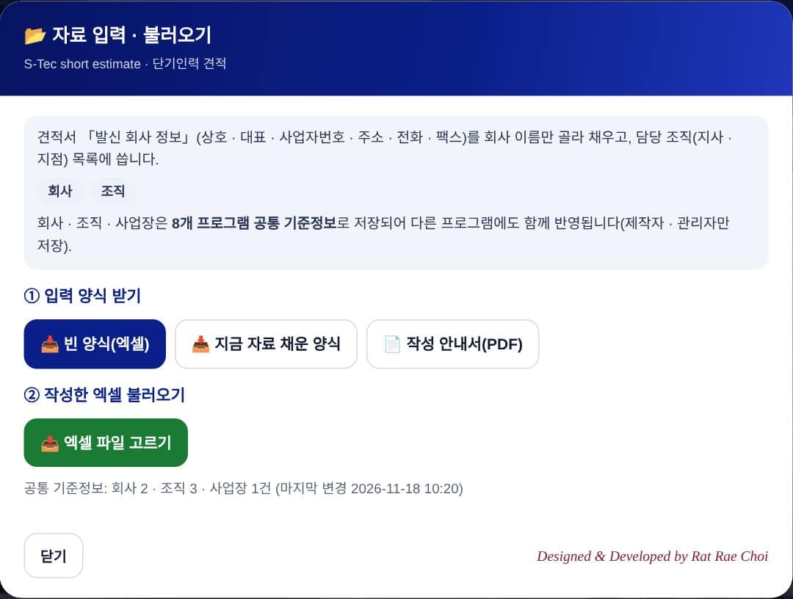
그림 40. 화면
[그림 35] 📂 자료 입력 · 불러오기
- 화면 왼쪽 아래 📂 자료 를 누릅니다.
- ① 입력 양식 받기 — 빈 양식(엑셀) 또는 지금 자료가 채워진 양식을 받고, 작성 안내서(PDF)로 칸마다 무엇을 적는지 확인합니다.
- 엑셀의 「회사」 · 「조직」 시트를 채웁니다. 머리글에 * 표시된 칸은 꼭 적고, 회사명·조직명은 시트끼리 같은 글자로 적어야 연결됩니다.
- ② 작성한 엑셀 불러오기 — 파일을 고르면 미리보기와 검사 결과가 나옵니다. 확인 후 적용 을 누릅니다.
도움말 저장 권한 공통 기준정보 저장은 제작자 · 관리자만 할 수 있습니다. 일반 사용자는 양식과 안내서를 받아 작성한 뒤 관리자에게 전달하세요. 기준정보가 바뀌면 화면 아래에 「기준정보가 바뀌었습니다 · 새로고침」 안내가 나옵니다. (이 기능은 인터넷 연결이 필요합니다.) |
13. 자주 묻는 질문
요점 본 매뉴얼은 S-Tec short estimate v1.5.2 기준입니다. · Designed & Developed by Rat Rae Choi
질문 | 답변 |
|---|---|
다른 PC에서 견적이 안 보여요 | 같은 아이디로 로그인했는지 확인하고, 내 계정 › 지금 동기화를 누르세요. |
🔐 사용 권한이 없다고 나와요 | 계정은 승인됐지만 이 프로그램 권한이 없습니다. 제작자(관리자)에게 프로그램별 권한을 요청하세요. |
새 휴대폰에서 승인 대기가 나와요 | 새 기기 승인 기능이 켜져 있습니다. 관리자가 기기를 승인하면 다시 확인을 누르세요. |
개별 앱에 「통합 앱으로 옮겨 주세요」가 나와요 | 2026-12-18이 지났습니다. 통합 앱 S-Tec Operations을 설치하세요. 아이디·비밀번호는 같습니다. |
비밀번호를 잊었어요 | 로그인 화면의 "비밀번호를 잊었어요"로 메일을 받거나, 관리자에게 임시 비밀번호 발급을 요청하세요. |
승인 대기 화면에서 멈춰요 | 제작자·관리자가 승인해야 합니다. 승인 후 "다시 확인"을 누르세요. |
휴대폰을 잃어버렸어요 | 관리자 페이지 › 기기에서 그 기기만 차단하면 계정은 다른 기기에서 계속 쓸 수 있습니다. |
관리손익을 3%로 하고 싶어요 | 회사 기준상 최소 5%로 고정되어 있습니다. |
감시단속직인데 연장수당이 안 붙어요 | 감시단속직은 근로시간·휴일 규정 적용 제외로 야간 50%만 가산됩니다. |
장비 단가가 실제와 달라요 | 요율 설정 › 장비·장구 대여 단가표에서 수정하면 이후 견적에 반영됩니다. |
앱에서 인쇄 버튼이 없어요 | 앱에서는 Excel 저장 또는 견적서 파일(HTML) 저장 후 공유하세요. |
일요일인데 휴일 가산이 안 붙어요 | 계산 기준이 감시단속직이면 휴일 가산이 없습니다(법정 적용 제외). 일반직인지 확인하세요. |
공휴일이 아닌 날도 휴일로 하고 싶어요 | 달력의 "휴일로 지정" 모드에서 그 날짜를 누르세요. |
남·여 수당이 달라요 | 항목 아래 "＋ 조건 추가"로 여성 조건을 만들고 수당만 바꾸세요. |
잠금 화면이 다시 나와요 | 견적 담당을 해제했거나 앱 데이터를 지운 경우입니다. 담당자를 다시 지정하세요. |
본 매뉴얼은 S-Tec short estimate v1.5.2 기준입니다. 4대보험·최저임금 요율은 2026년 기준이며 매년 확인이 필요합니다.
Designed & Developed by Rat Rae Choi
Designed & Developed by Rat Rae Choi